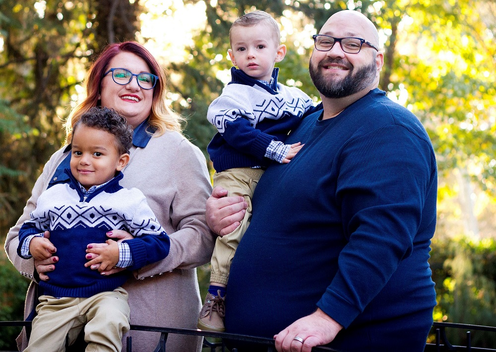

About Me
I am working on a computer programming degree. I have been married almost 11 years. We have 2 children, 9 months apart and they are both adorable and monsters. We enjoy camping, movies, lounging around the house and being with family. I work for eBay's Social Media department answering customer service questions about buying and selling. I have been taking computer programming classes for some time now and can code in 6 different languages (basic knowledge). You have to attend BYU Idaho to get a programming degree, so my bachelors will likely be something like Computer Science > Applied Technology. Web Design is a required course in this and I look forward to learning more. I honestly hope to learn enough about web developement to maybe even start working in such a field to get more experience under my belt. I do have a programming certificate from BYU Idaho and look forward to finally getting a bachelors. I have been a member of the church for my entire life and served an LDS mission in Santiago, Chile back in 2001-2003.